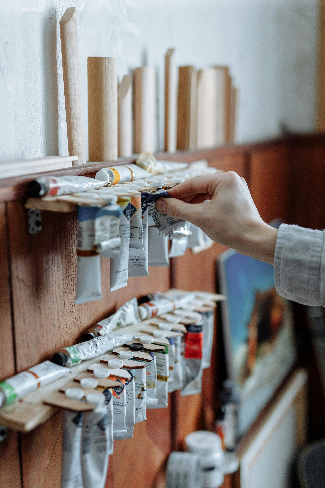
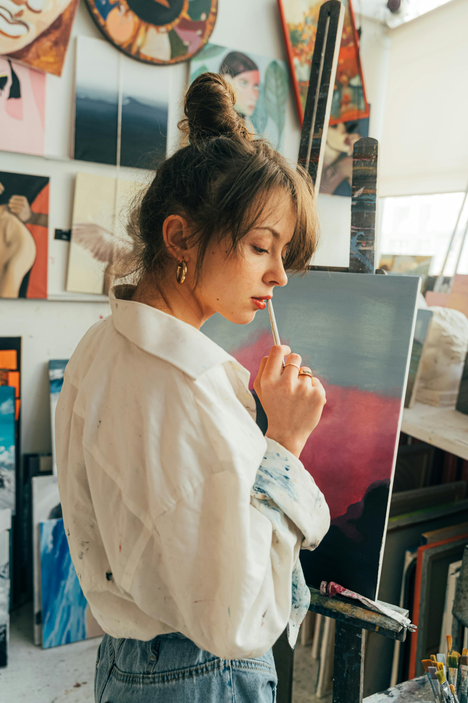

Blog - Tech Palette Mentor
Welcome to our blog! Here you'll find insightful posts on Irish art history, modern art techniques, and more!
-
How to Use Tech Palette to Help You Paint: A Guide for Artists
Learn how to use our web app to enhance your painting process.
-
Exploring Ireland's Art History and the Influence of Religion
Discover how religion shaped Irish art over the centuries.
-
The Influence of Celtic Art on Modern Irish Artists
Explore how ancient Celtic art continues to inspire modern creators.

-
The Evolution of Irish Landscape Painting
Trace the development of landscape painting in Ireland.

-
Art and the Irish Diaspora: Connecting the Past and Present
Understand how the Irish diaspora has influenced global art.
-
The Irish Arts and Crafts Movement: A Forgotten Legacy
Rediscover the impact of the Arts and Crafts movement in Ireland.

-
Famous Irish Artists of the 19th Century
Learn about the iconic artists who shaped Irish art in the 1800s.
-
Women in Irish Art: Pioneers and Contemporary Figures
Celebrate the contributions of women to Irish art.